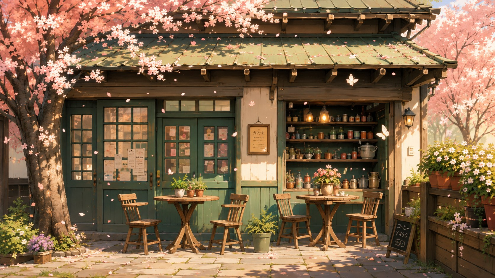

本屋 · Rincón de papel y sakura
La Librería de los Pétalos
Hay 7 libros escondidos en la escena. Búscalos entre las mesas, las sillas, el tejado y las estanterías.
📖
0 / 7 encontrados
Pssst… fíjate bien: hay libros diminutos escondidos por toda la escena 🌸